Thermodynamics
Thermodynamics is a phenomenological description of the equilibrium properties of macroscopic systems. Historically, thermodynamics arose from attempts to build and understand the behavior of steam engines in the 19th century. Nowadays it’s applied all across the sciences, particularly in the understanding the behavior of materials, chemical compounds, and biological systems. Thermodynamics is still extensively used in engineering as well to design and build things like engines, heat pumps, and refrigerators.
Statistical Mechanics is a probabilistic approach to understanding the equilibrium properties of systems with large numbers of degrees of freedom. Statistical mechanics arose in the late 19th century in an effort to derive the laws of thermodynamics from the more fundamental laws of classical and later quantum mechanics.
We’ll start in this lesson by studying the phenomenological description of thermodynamics. Later on we’ll derive the same description from first principle approaches, ultimately leading up to the ensemble methods of classical and then quantum statistical mechanics.
Thermodynamics is a great example of a black box theory built entirely from empirical observations. It’s built from four empirically observed laws. The zeroth law establishes the existence of thermal equilibrium. The first law establishes conservation of energy. The second law establishes the existence of entropy and the arrow of time. The third law establishes the condition for a system to be at absolute zero temperature.
Thermodynamic Systems
In thermodynamics we seek to describe the macroscopic properties of a thermodynamic system. Unlike in classical mechanics, we won’t think of a system as a particle or a collection of particles, but rather as an object describable by a set of macroscopic properties. By macroscopic we mean properties that describe the state of the entire system, like its temperature, pressure, volume, etc. These properties are called state variables or thermodynamic coordinates.
We’ll think of two distinct types of thermodynamic systems:
- An adiabatic system: A system isolated by “walls” that don’t allow heat to flow in or out.
- A diathermic system: A system with “permeable walls”, where heat is allowed to flow in or out.
- A diathermic system in which no particles are allowed to flow in or out is a closed system.
We say an adiabatic system is in equilibrium when its macroscopic properties have had sufficient time to relax to constant steady state values. By “constant”, we mean the properties don’t change appreciably over some given observation time. The specific properties we seek to measure depend on the type of system under consideration. Here are some examples of mechanical properties that might depend on the system:
- Gas in a container: We might be interested in its volume or the pressure it exerts on the container.
- A wire under tension: We might be interested in its length or the tension forces exerted on it.
- A magnet in a field: We might be interested in its magnetization or its external magnetic field.
On top of these mechanical properties that vary by system, we also may be interested in a system’s thermal properties, i.e. properties that arise due to the system’s internal interactions. The macroscopic thermal properties might be temperature, entropy, or heat.
The Zeroth Law
Suppose we have three distinct systems \(A\), \(B\), and \(C\). The zeroth law of thermodynamics states that if \(A\) is in equilibrium with \(B\), and \(B\) is in equilibrium with \(C\), then \(A\) is in equilibrium with \(C\). That is, the property of equilibrium is transitive.
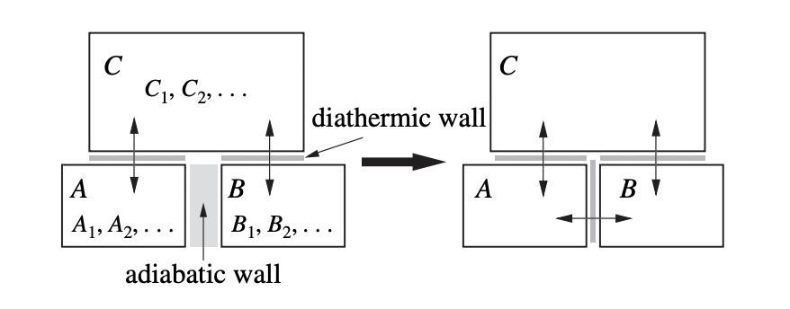
Notice that for any two systems to be in equilibrium with each other they must be allowed to exchange heat. If they were isolated, even the smallest change to one system wouldn’t affect the other. The zeroth law evidently implies that this holds for any number of systems in equilibrium. You can’t isolate any one from the other, since heat can always flow through any two pairs of systems in equilibrium with each other.
The zeroth law implies the existence of a thermal quantity called the empirical temperature that’s the same among systems in equilibrium, a quantity that doesn’t change when no net heat is flowing between any two systems.
Theorem: Suppose two systems \(A\) and \(B\) are in thermodynamic equilibrium with each other. Suppose \(A\) has thermodynamic coordinates \(A_1, A_2, \cdots, A_n\) and \(B\) has thermodynamic coordinates \(B_1, B_2, \cdots, B_m\). Then there exists a value \(\theta\), called the empirical temperature, that depends only on the state of each system, and in equilibrium satisfies the property that for some functions of the coordinates \[ \theta = \theta_A(A_1, A_2, \cdots, A_n) = \theta_B(B_1, B_2, \cdots, B_m). \] Proof: Suppose a third system \(C\) is in equilibrium with \(A\) and \(B\) with coordinates \(C_1, C_2, \cdots, C_k\). Since \(A\) is in equilibrium with \(C\), there must be some function of constraint \(f_{AC}\) such that \[ f_{AC}(A_1, A_2, \cdots, A_n, C_1, C_2, \cdots, C_k) = 0. \] Similarly, if \(B\) is in thermal equilibrium with \(C\) then there is some other constraint function \(f_{BC}\) such that \[ f_{BC}(B_1, B_2, \cdots, B_m, C_1, C_2, \cdots, C_k) = 0. \] Now, we can imagine solving for each function in terms of a common variable \(C_1\) to get new functions \[ \begin{align*} C_1 &= g_{AC}(A_1, A_2, \cdots, A_n, C_2, \cdots, C_k), \\ C_1 &= g_{BC}(B_1, B_2, \cdots, B_m, C_2, \cdots, C_k). \\ \end{align*} \] Setting these two functions equal thus says that \[ g_{AC}(A_1, A_2, \cdots, A_n, C_2, \cdots, C_k) - g_{BC}(B_1, B_2, \cdots, B_m, C_2, \cdots, C_k) = 0. \] By the zeroth law, we also know that \(A\) must be in thermal equilibrium with \(B\). This means there’s yet another function \(f_{AB}\) such that \[ f_{AB}(A_1, A_2, \cdots, A_n, B_1, B_2, \cdots, B_m) = 0. \] Taken together, this says that we can take \(f_{AB}\) and spread it out into two functions \(g_{AC}\) and \(g_{BC}\), where \(g_{AC}\) depends only on the coordinates of \(A\) and \(C\), and \(g_{BC}\) depends only on the coordinates \(B\) and \(C\). If we imagine using the coordinates of \(C\) as some kind of reference values we can treat them as constants. That means we’re left with an expression of the form \[ g_{AC}(A_1, A_2, \cdots, A_n, \text{const}) - g_{BC}(B_1, B_2, \cdots, B_k, \text{const}) = 0. \] This says we have a function of \(A\) that must equal a similar function of \(B\) at thermal equilibrium, \[ \theta \equiv \theta_A(A_1, A_2, \cdots, A_n) = \theta_B(B_1, B_2, \cdots, B_m). \qquad \text{Q.E.D.} \] The empirical temperature is evidently reference dependent since we had to fix values for some third system \(C\) just to properly define it. We can choose \(C\) to be anything we like as long as we agree on a convention. The most common is the triple point of water, the state where water coexists in its gas, liquid, and solid forms simultaneously. This occurs at a temperature of about \(T = 273.16 \ \degree \text{K}\) and pressure of about \(p = 0.006 \text{ atm}\).
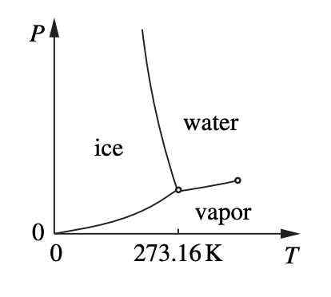
The condition that \(\theta = \theta_A\) says that in the space of coordinates of \(A\), in thermal equilibrium the system must be constrained to a surface of constant \(\theta_A = \theta\). This surface is called an isotherm, a surface of constant temperature. Similarly for \(B\).
Analogy: Think of defining temperature similarly to how one might empirically define mass by using a scale. You first establish a reference mass \(C\), for example some standard block of metal in a vault, and then use that to talk about how much the masses \(A\) and \(B\) weigh in units of \(C\).
The Ideal Gas
One practically useful way to define an empirical temperature scale uses the properties of the ideal gas. An ideal gas is a large number of dilute particles that satisfy the property that the product of the gas’s pressure \(p\) and volume \(V\) is proportional temperature in the dilute limit, i.e. \[ \lim_{V \rightarrow \infty} pV = \lim_{p \rightarrow 0} pV \propto \theta. \] We’ll assume the gas is allowed to interact diathermally with its environment, called a heat bath. That is, the gas is allowed to exchange energy with its environment, but nothing else.
Suppose now that we submerge the gas in one heat bath and record values for \(p, V, \theta\) once the system has reached equilibrium. Then, we take the gas and submerge it again in a different reference heat bath. Once the system has again reached equilibrium, we again record the new values \(p_0, V_0, \theta_0\). Now, since the gas is ideal, we must have \[ \frac{\theta}{\theta_0} = \frac{pV}{p_0 V_0}. \] Provided we’ve fixed a value for \(\theta_0\), we can thus define the temperature \(T\) of the system by \[ T \equiv \theta \equiv \theta_0 \frac{pV}{p_0 V_0} = \frac{\theta_0}{p_0} \frac{pV}{V_0}. \] In the Kelvin scale, \(\theta_0\) and \(p_0\) are again defined by the triple point of water. This means that to measure the temperature, we’d need to first measure the pressure and volume of the gas in the heat bath of interest, and then compare that with the volume the same gas would have at the triple point.
For an ideal gas, we evidently have the relation then that \(pV \propto T\). It turns out that \(pV\) is also proportional to the number of particles \(N\) in the gas, \(pV \propto N\). We can write the full ideal gas law in the form \[ pV = Nk_B T, \] where \(k_B\) is a proportionality constant, called the Boltzmann constant. Its value is measured to be \[ k_B = 1.381 \cdot 10^{-23} \frac{\text{J}}{\degree \text{K}} \approx \frac{1}{40} \frac{\text{eV}}{\degree \text{K}}. \]
The First Law
In classical mechanics the conservation of energy is a fundamental principle of a microscopic system. We’d like to extend this idea to thermodynamics as well. Observations indicate that a similar principle operates at the level of macroscopic systems provided that the system is properly insulated, that is, when the only sources of energy are of mechanical origin.
Work, Energy, Heat
Suppose a thermodynamic system \(A\) is adiabatically isolated from its environment. If such a system is changed by some amount of work \(\Delta W\), then the amount of work is only dependent on its initial and final state. That is, if \(a_i=(A_{1,i}, \cdots, A_{n,i})\) is the initial state and \(a_f=(A_{1,f}, \cdots, A_{n,f})\), then \[ \Delta W = \Delta E = E(a_f) - E(a_i), \] where \(E = E(a)\) is some scalar function of state called the internal energy of the system. It’s the total energy of the system \(A\) when it’s adiabatically isolated.
Having a system be adiabatically isolated is a strong assumption that we’d like to relax, but doing so then means the system can exchange energy with its environment, which means \(\Delta W \neq \Delta E\). There’s a flow of energy \(\Delta Q\) in and out of the system now, called the heat. It’s the heat plus the work that’s conserved, \[ \Delta E = \Delta Q + \Delta W. \] This experimental fact is called the first law of thermodynamics. We assume this quantity called heat exists in such a fashion that the internal energy stays conserved. It’s not a theorem.
Aside: Note the work \(\Delta W\) is done on the system, not by the system. Many engineering texts adopt the opposite convention, where they like to think of work being done by the system (e.g. by an engine). In that case, the \(\Delta W\) would change its sign, in which case we’d write \(\Delta E = \Delta Q - \Delta W\).
Since thermodynamic state variables only make sense when a system is in equilibrium, if we want to think about the first law in differential form we have to imagine we can change the system differentially in such a way that it stays in equilibrium. Doing so is called a quasi-static process. We vary the system very slowly from its initial to its final state, allowing the system to come to equilibrium again at each point. This allows us to fill in the path continuously with points so we can then talk about differential changes.
In differential form, the first law of thermodynamics has the form \[ dE = \delta Q + \delta W. \] The notation \(\delta Q\) and \(\delta W\) is used to make it explicit that those variables are path dependent. That is, they’re not a function of only the initial and final states. This means we can’t integrate them directly to get the total heat or work done. However, the energy is a state variable, it is a function only of its end points, and so we can integrate \(dE\) to get the total internal energy \(\Delta E\), \[ \Delta E = \int dE = \int (\delta Q + \delta W). \]
Types of Work
The work done on the system is inherently mechanical in that it’s a sum of forces times displacements. Since we want to imagine generalized forces and generalized displacements, we’ll write it in the notation \[ \delta W = \sum_i J_i d q_i, \] where \(J_i\) is a generalized force conjugate to some generalized displacement variable \(q_i\). Here are some of the most common conjugate force-displacement pairs:
| System | Generalized Force: \(J\) | Generalized Displacement: \(q\) |
|---|---|---|
| Wire | Tension: \(F\) | Length: \(L\) |
| Film | Surface Tension: \(\sigma\) | Area: \(A\) |
| Fluid | Pressure: \(-p\) | Volume: \(V\) |
| Magnet | Magnetic Field: \(B\) | Magnetization: \(M\) |
| Dielectric | Electric Field: \(E\) | Polarization: \(P\) |
| Chemical Reaction | Chemical Potential: \(\mu\) | Particle Number: \(N\) |
The generalized forces have the property that their values are independent of the size of the system. Doubling the size of the system doesn’t double the forces acting on it. These are called intensive variables. Conversely, the generalized displacements are directly proportional to the size of the system. If the system’s size is doubled, so too are the displacements. These are called extensive variables. Intensive and extensive variables always tend to occur in conjugate pairs like this.
Using the new notation, we can re-write the first law in the form \[ dE = \delta Q + \sum_{i=1}^k J_i dq_i. \] For reasons we’ll get into soon, it’s also convenient to break up the work component into non-chemical and chemical work components. If we explicitly split off the chemical work terms, we’d instead write \[ dE = \delta Q + \sum_{i=1}^n J_i dq_i + \sum_{j=1}^m \mu_i dN_i. \] Of course, we still don’t know how to simplify \(\delta Q\) into a useful form. We’ll deal with that soon.
Heat Capacities
Suppose we pump some amount of heat \(\delta Q\) into the system. Provided heat is a function of temperature, we’d have \(\Delta Q = C \Delta T\), where \(C = C(T)\) is some function of temperature, called the heat capacity. The functional form of \(C\) depends on the nature of the system. Evidently, the heat capacity is given by \[ C(T) \equiv \frac{\delta Q}{dT}. \] Since heat is path dependent, the heat capacity must be too. If \(\gamma\) is some path taken to get from the initial to the final point in state space, then we might write \(C = C_\gamma\) to be explicit about this. The most important case is when we’re dealing with a gas. If a gas is only has work done \(\delta W = -pdV\), then we can think of the gas as only being a function of two state variables, \(p\) and \(V\). Two paths of interest in \(pV\)-space are paths of constant \(p\) or \(V\). Using the first law, the heat capacity \(C_V\) at constant volume is evidently \[ C_V = \frac{\delta Q_V}{dT} = \frac{dE + pdV}{dT} \bigg |_V = \frac{\partial E}{\partial T}\bigg |_V. \] Similarly, the heat capacity \(C_p\) at constant pressure is evidently \[ C_p = \frac{\delta Q_p}{dT} = \frac{dE + pdV}{dT} \bigg |_p = \frac{\partial E}{\partial T}\bigg |_p + p \frac{\partial V}{\partial T} \bigg |_p. \] It turns out that the two \(\frac{\partial E}{\partial T}\) derivatives are the same. This follows empirically from the Joule Free Expansion Experiment: Suppose we have two chambers connected by a thin hole that’s initially closed. Initially, all the gas is in the left chamber at an equilibrium temperature \(T\). Suppose the hole is then suddenly opened, allowing the gas to adiabatically expand into the right chamber.
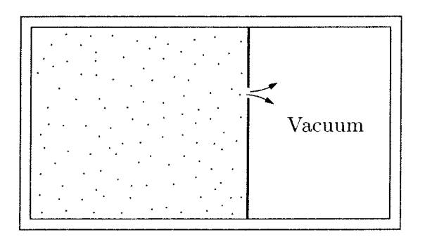
Since the gas isn’t pushing on anything, it can’t do any work. Since the process is adiabatic, no heat is flowing either. This means the total energy isn’t changing either. Once the system has settle down to equilibrium, the temperature in the two chambers must be the same. This evidently implies the energy must be a function of temperature alone, i.e. \[ E = E(T) = E(pV). \] Using this fact, for an ideal gas we can evidently write \[ C_p - C_V = p \frac{\partial V}{\partial T} \bigg |_p. \] Since \(V = \frac{Nk_B T}{p}\), this reduces to just \[ C_p - C_V = N k_B. \] It turns out that in fact \(E \propto pV\). This result is called the equipartition theorem. It must be taken as an empirical law in thermodynamics, but it can be proven with statistical mechanics. The equipartition theorem says that an ideal gas whose individual particles each have \(n\) degrees of freedom will have a total energy given by \[ E = \frac{n}{2} Nk_B T = \frac{n}{2} pV. \] For example, a monoatomic gas is a gas whose particles only have \(n=3\) translational degree of freedom. In that case, we’d have \(E = \frac{3}{2} pV\). A diatomic gas is a gas whose particles also have two rotational degrees of freedom, giving \(n=3+2=5\) total degrees of freedom, and \(E = \frac{5}{2} pV\).
Aside: Suppose you wanted to know about how fast particles in a gas were moving. If the gas is roughly ideal, you can use the following rule of thumb: Since the kinetic energy per particle is \(\varepsilon=\frac{1}{2}mv^2\), the total energy is just \(E = N\varepsilon = \frac{N}{2}mv^2\). By the equipartition theorem, \(E = \frac{n}{2} Nk_B T\). Equating both terms and solving for the velocity \(v\) gives \[ v = \sqrt{\frac{nk_B T}{m}}. \] Note this formula is only approximately true, in that it actually gives an estimate of the RMS velocity.
Using the equipartition theorem, we can find the heat capacity of an ideal gas directly. Since \[ \frac{d E}{d T} = \frac{n}{2} Nk_B, \] we evidently have \[ C_V = \frac{n}{2} Nk_B, \quad C_p = \bigg(\frac{n}{2}+1\bigg) Nk_B. \] Notice that these heat capacities are extensive since they’re both proportional to \(N\). In practice we’re interested in an intensive measure of how responsive heat is to changes in temperature. We can achieve this by dividing by \(N\) to get a specific heat. More commonly, specific heats are measured per unit mass, not per particle*. If the system has mass \(m\), its specific heat capacity is defined by \(c \equiv \frac{C}{m}\).
Usually it’s the specific heats that are tabulated for various substances. We’d need to look them up to do any kind of numerical calculations. The most useful specific heat to remember is the specific heat of water at standard temperature and pressure or STP, i.e. \(p=1 \text{ atm}, T=298 \ \degree K\). In energy units of calories, the specific heat of water at STP is just \(c_p = 1 \ \frac{\mathrm{cal}}{\mathrm{g} \mathrm{\degree K}}\). Note that the specific heat does depend on the phase of a substance. For example, ice has a specific heat of \(c_p = 0.5 \ \frac{\mathrm{cal}}{\mathrm{g} \mathrm{\degree K}}\).
Another important quantity that’s similar to the specific heat is the latent heat. It’s an intensive measure of how much heat is needed for a system to fully undergo a phase change, \[ L \equiv \frac{\Delta Q}{m}. \] In general, latent heat values will be different than the specific heat values. They’ll also be different for different phase changes. For example, the latent heat of melting ice is \(L = 80 \ \frac{\text{cal}}{g}\), while the latent heat of boiling water is \(L = 540 \ \frac{\text{cal}}{g}\). Again, we’d look these up in tables when we need them.
The Second Law
We saw that were able to break the work \(\delta W\) up into a sum of generalized force-displacement pairs as \(\delta W = \sum J_i dq_i\). We’d like to be able to break up the heat \(\delta Q\) somehow. It’s reasonable to assume that \(T\) is the generalized force for heat, but what is the generalized displacement? This leads us to the second law and the concept of entropy.
Engines
The second law of thermodynamics arose historically out of an interest among engineers in converting back and forth between heat and mechanical work. A device that converts heat into mechanical work is called an engine. A device that converts mechanical work into heat is called a heat pump or a refrigerator (the difference between the two being whether we want to pump heat into or out of a system).
Suppose an engine takes in heat \(Q_H\) from a heat reservoir, outputs some amount of work \(W\), and dumps any remaining output heat \(Q_C\) into a cold reservoir. By the first law, \(Q_H = Q_C + W\). Define the efficiency \(\eta\) of the engine as the ratio of work extracted to the total amount of heat put in, \[ \eta \equiv \frac{W}{Q_H}. \] Since \(W = Q_H - Q_C\), we can also write the efficiency as \[ \eta = 1 - \frac{Q_C}{Q_H}. \] Since we must have \(Q_C \leq Q_H\) by the first law, this means \(0 \leq \eta \leq 1\) generally speaking. A perfectly efficient engine would convert all heat into work, in which case \(\eta = 1\).
We can define a similar measure of efficiency for a heat pump or a refrigerator. In that case, we’re interested in how much heat we can extract per unit work put in. This measure is called the coefficient of performance \(\omega\), given by \(\omega_{fr} \equiv \frac{Q_C}{W}\) for a refrigerator, and \(\omega_{hp} \equiv \frac{Q_H}{W}\) for a heat pump. Again using the fact that \(Q_H = Q_C + W\), it’s easy to show that \(\omega_{fr} \geq 1\) and \(0 \leq \omega_{hp} \leq 1\).
Here’s a diagram showing the difference between an engine and a refrigerator. Notice that the refrigerator is just an engine with the arrows reversed. We’ll exploit this fact a good bit shortly.
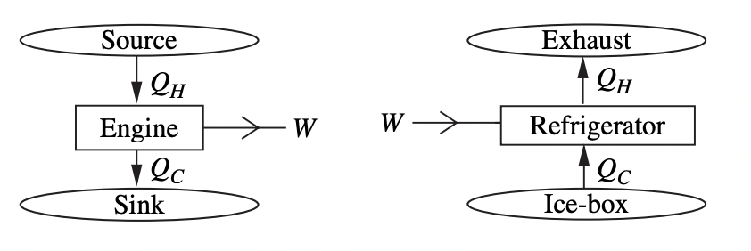
The Second Law
The second law of thermodynamics can be stated in several ways that are all equivalent. I’ll state it first using the definition given by Kelvin, and then use that to prove it’s equivalent to a different statement made by Clausius.
Second Law (Kelvin): No thermodynamic process is possible whose sole result is the complete conversion of heat to work or work to heat. Equivalently, there is no ideal engine with efficiency \(\eta = 1\).
Second Law (Clausius): No thermodynamic process is possible whose sole result is the transfer of heat from a colder body to a hotter body. Equivalently, there is no ideal refrigerator with performance \(\omega = \infty\).
Proof: We’ll prove these are equivalent by showing if Kelvin is false, then so is Clausius, and vice versa.
If Kelvin is false, so is Clausius: If Kelvin is false, then there exists an engine with that outputs heat \(Q\) to work \(W\) with 100% efficiency. We can use this \(W\) to then power a refrigerator. Suppose the refrigerator pumps heat \(Q_C\) from a cold reservoir to a new heat \(Q_H\) that dumps into the same hot reservoir as the engine. Then on net we have a system that pumps in a heat \(Q_C\) and pumps out a heat \(Q_H-Q\). That is, we’ve built a refrigerator that pumps heat from a cold body to a warm body, violating Clausius. \(\text{Q.E.D.}\)
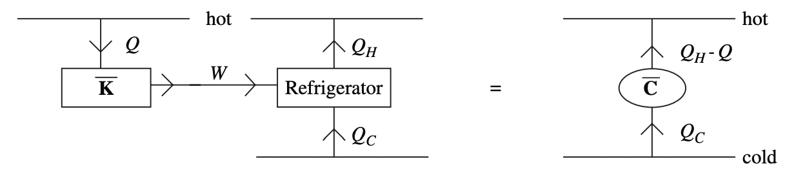
If Clausius is false, so is Kelvin: If Clausius is false, then it’s possible to build a heat pump to pump heat from a cold reservoir to a hot reservoir with no input work required. Let’s hook an engine up to the same reservoir, taking an input heat \(Q_H\) from the hot reservoir and converting it to some combination of work \(W\) and output heat \(Q_C\). Then on net we have a system that takes in heat \(Q_H-Q\) and converts it purely into work, i.e. \(W = Q_H - Q\), which violates Kelvin. \(\text{Q.E.D.}\)
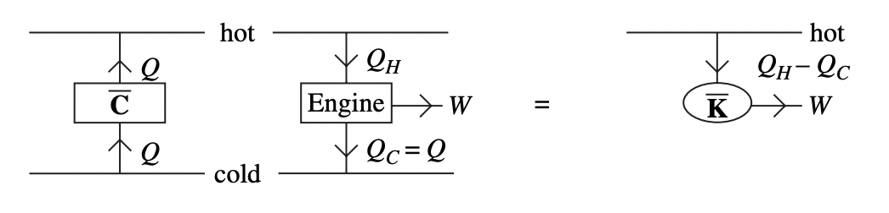
The Carnot Engine
If we can’t have an engine with perfect efficiency, what’s the highest possible efficiency we can possibly have? As we’ll soon prove, the highest efficiency engine is a Carnot engine. A Carnot engine is defined to be any engine that’s reversible, runs in a cycle, and whose reservoir temperatures are held fixed, with the hot reservoir at \(T_H\) and the cold reservoir at \(T_C\).
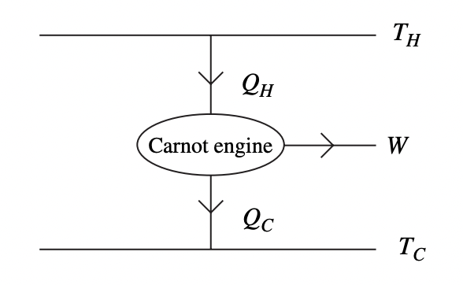
A thermodynamic process is called reversible if it can be run backward in time by simply reversing the inputs and outputs. It’s the thermodynamic equivalent of frictionless motion in classical mechanics. Since reversibility implies the system stays in equilibrium, reversible processes must be quasi-static. However, not all quasi-static processes need be reversible. Any process that dissipates energy to its environment, even if done quasi-statically, is not reversible.
Example: Carnot Cycle of an Ideal Gas
To make the topic somewhat more concrete, suppose we have an ideal gas inside a piston, consisting of a single type of molecule with no exchange of particles taking place. Then the only work being done is the work done by the piston to change the volume \(V\) and pressure \(p\) of the gas. Then by the first law, \[ dE = \delta Q + \delta W = \delta Q - pdV. \] This means the state variables are \((p, V)\). In \(pV\)-space, the Carnot engine will be a cycle consisting of two isotherms at \(T_H\) and \(T_C\) that are connected by curves where \(\delta Q = 0\), called adiabatics.
Suppose a cycle starts on the upper left point, say \((p_A, V_A)\). It expands isothermally to \((p_B, V_B)\), then adiabatically expands to \((p_C, V_C)\), then isothermally compresses to \((p_D, V_D)\), before finally adiabatically compressing back to \((p_A, V_A)\).
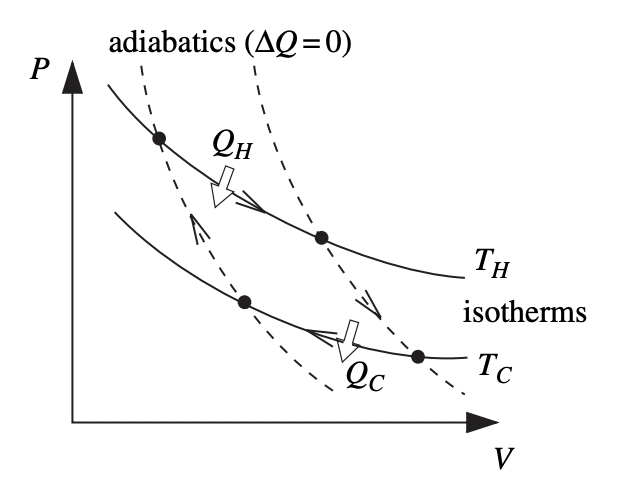
Along the isotherms, the ideal gas law says the curves must be hyperbolas, \[ pV = N k_B T_H, \quad pV = N k_B T_C. \] Along the adiabatics, the condition \(\delta Q = 0\) along with the equipartition theorem implies \[ dE = \frac{n}{2} d(pV) = -pdV \quad \Longrightarrow \quad \bigg(\frac{n}{2}+1\bigg) pdV = -\frac{n}{2} Vdp. \] This is a differential equation for \(p(V)\). Using separation of variables on both sides gives \[ pV^\gamma = p_0 V_0^\gamma = const, \quad \text{where} \quad \gamma \equiv \frac{2}{n}\bigg(\frac{n}{2}+1\bigg). \] For example, with a monoatomic gas we’d have \(\gamma = \frac{5}{3}\), so the adiabatics are \(pV^{5/3} = const\). For the two adiabatic curves in the cycle, taking \((p_0, V_0)\) to be the two initial points along the curves gives \[ pV^\gamma = p_B V_B^\gamma, \quad pV^\gamma = p_D V_D^\gamma. \] Note that since the Carnot cycle is reversible, the total work done during a full cycle is zero.
Theorem: Of all engines operating between two reservoir temperatures \(T_H\) and \(T_C\), the Carnot engine is the most efficient.
Proof: Suppose we had some arbitrary non-Carnot engine with efficiency \(\eta\) that takes in heat \(Q_H'\) from the hot reservoir, generates work \(W\), and dumps the remaining heat \(Q_C'\) into the cold reservoir. Using the same trick, hook a reversed Carnot engine (i.e. a Carnot refrigerator) up to take in the output work \(W\) and use it to pump heat \(Q_C\) from the cold reservoir to a heat \(Q_H\) in the hot reservoir. On net, this gives a cycle that takes in heat \(Q_H'-Q_H\) and converts it to heat \(Q_C'-Q_C\) .
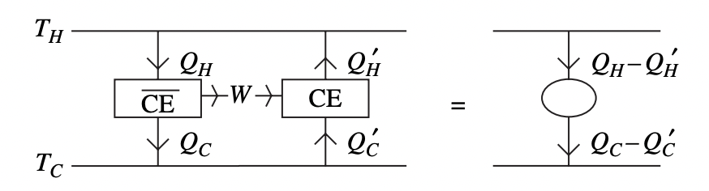
But by the second law, we must have \(Q_H'-Q_H \geq Q_C'-Q_C\). Dividing both sides by \(W\) and reorganizing, we get \[ \eta = \frac{W}{Q_H'} \leq \frac{W}{Q_H} = \eta_{carnot}. \] That is, the Carnot engine is more efficient. \(Q.E.D.\)
Corollary: All Carnot engines between \(T_H\) and \(T_C\) have the same efficiency.
Proof: Follow the previous proof, but this time hook up another Carnot engine to the Carnot refrigerator to get \(\eta = \eta_{carnot}\). \(Q.E.D.\)
We can use the Carnot engine to construct yet another temperature scale, except this time we can do it without reference to any material properties at all. This is called the thermodynamic temperature scale. What we can do is hook two Carnot engines up in series as follows. Suppose a Carnot engine \(CE_1\) takes heat from \(T_1\) to \(T_2\), and Carnot engine \(CE_2\) takes heat from \(T_2\) to \(T_3\). We can also think of the whole thing as a single Carnot engine \(CE\) that takes heat from \(T_1\) to \(T_3\).
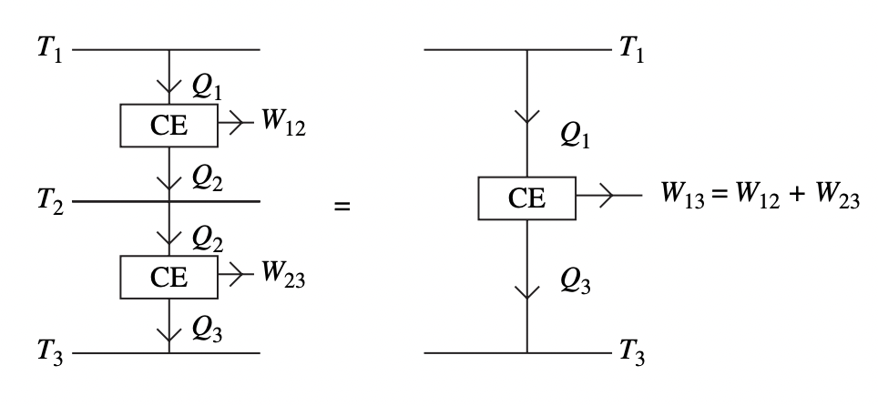
Now, if we look at the heat output for each engine, we have \[ \begin{align*} CE_1: Q_2 &= Q_1 - W_{12} = Q_1(1 - \eta_{12}), \\ CE_2: Q_3 &= Q_2 - W_{23} = Q_2(1 - \eta_{23}), \\ CE: Q_3 &= Q_1 - W_{13} = Q_1(1 - \eta_{13}). \\ \end{align*} \] We can equate both terms for \(Q_3\) and simplify to get \[ 1 - \eta_{13} = (1 - \eta_{12})(1 - \eta_{23}). \] Now, if we divide both sides by \(1 - \eta_{23}\) we get \[ 1 - \eta_{12} = \frac{Q_2}{Q_1} = \frac{f(T_1)}{f(T_2)}. \] The system must satisfy this constraint for any function \(f(T)\) we choose. We might as well just choose \(f(T) \equiv T\), in which case we get \[ \eta_{12} = 1 - \frac{T_2}{T_1}. \] That is, any Carnot engine between \(T_H\) and \(T_C\) must have an efficiency given by \[ \eta = 1 - \frac{T_C}{T_H}. \] Notice that since \(T_C < T_H\), the Carnot efficiency can never be \(1\). For reasonable temperature ranges, say from freezing to boiling at STP, we’d have \(\eta \approx 0.268\). That’s under 27% efficiency! In fact, the Carnot engine, while the best we can do efficiency-wise, it’s not practical for real engines. One major reason for this is that isothermal processes are really slow, meaning it takes too impractically long to complete a single cycle.
Since the Carnot efficiency \(\eta\) between two temperatures is fixed, we can use it to define a temperature scale provided we fix a base temperature \(T_0\). We can define the temperature \(T\) as the value that gives a Carnot efficiency \(\eta\) between \(T\) and \(T_0\). That is, \[ T \equiv T_0 (1 - \eta). \] The thermodynamic definition also implies that temperature \(T\) must be positive. If we had \(T < 0\), then an engine operating between it and a positive temperature could extract heat from both reservoirs and convert the sum total to work, in violating of the second law.
Entropy
We’re finally ready to construct the state function that’s conjugate to temperature. Let’s look again at the previous theorem that said \(\eta \leq \eta_{carnot}\) for any engine between \(T_H\) and \(T_C\). We can rewrite this inequality in the form \[ \frac{W}{Q_H} = 1 - \frac{Q_C}{Q_H} \leq 1 - \frac{T_C}{T_H}. \] Rearranging both sides, we get \[ \frac{Q_H}{T_H} - \frac{Q_C}{T_C} \leq 0. \] What’s interesting to notice here is that the quantity \(\frac{Q}{T}\), whatever it is, depends only on the initial and final points. That is, it’s a state function. In fact, the above statement is extremely general.
Clausius’ Theorem: For any cyclic process (not necessarily quasi-static), if \(\delta Q\) is an increment of heat delivered to a system at some temperature \(T\), then the sum total ratio of heat to temperature across the entire cycle is negative, i.e. \[ \oint \frac{\delta Q}{T} \leq 0. \] Proof: What we’ll do is imagine pumping a heat increment \(\delta Q\) into the system by hook a Carnot engine with hot reservoir temperature \(T_0\) , which takes input heat \(\delta Q_0\) and uses that to generate some amount of work \(\delta W\), expelling the remaining heat into the system as \(\delta Q\) at a cold reservoir temperature \(T\).
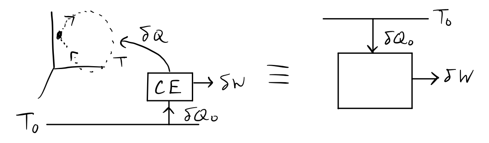
Now, since the engine is a Carnot engine, we have \[ 1 - \eta = \frac{\delta Q}{\delta Q_0} = \frac{T}{T_0} \quad \Longrightarrow \quad \delta Q_0 = T_0 \frac{\delta Q}{T}. \] At the end of a full cycle, the net effect of the combined process is the extraction of heat \(Q_0 = \oint \delta Q_0\) from the hot reservoir, which is converted purely to external work \(W = \oint \delta W\). The total work \(W\) is the sum of the work done by the engine and the work done by the system. Now, by the second law, we must have \(Q_0 = W \leq 0\), i.e. \[ Q_0 = T_0 \oint \frac{\delta Q}{T} \leq 0 \quad \Longrightarrow \quad \oint \frac{\delta Q}{T} \leq 0. \quad \text{Q.E.D.} \] Corollary: For a reversible process, we must have exact equality, i.e. \[ \oint \frac{\delta Q_{rev}}{T} = 0. \] Proof: This is easy to see. If we run the process forward we get \(\frac{\delta Q_{rev}}{T} \leq 0\). By reversibility though, we can also run the process backwards, in which case \(\delta Q_{rev} \rightarrow -\delta Q_{rev}\), and so \(\frac{\delta Q_{rev}}{T} \geq 0\). This implies the integral between any two points \(A\) and \(B\) must be path independent, since for any two paths \(\mathcal{C}\) and \(\mathcal{C}'\), we have \[ \int_A^B \frac{\delta Q_{rev}^{{\mathcal{C}}}}{T_{{\mathcal{C}}}} + \int_B^A \frac{\delta Q_{rev}^{{\mathcal{C}'}}}{T_{{\mathcal{C}'}}} = 0 \quad \Longrightarrow \quad \oint \frac{\delta Q_{rev}}{T} = 0. \quad \text{Q.E.D.} \] This corollary implies the existence a state function \(S\), defined by the path integral \[ \Delta S = \int_A^B \frac{\delta Q_{rev}}{T}. \] This state function is called the entropy of the system. Since \(\delta Q_{rev} = TdS\), we’ve finally found the conjugate to temperature we were seeking. It’s just the entropy. Plugging this into the first law, we have that for any quasi-static, reversible process in equilibrium, \[ dE = TdS + \sum_{i=1}^n J_i dq_i + \sum_{j=1}^m \mu_i dN_i. \] This formula is without doubt the most useful identity in thermodynamics. Notice that this implies that we only need \(n+m+1\) total quantities to completely specify the state of the system. We can obtain the rest by partial differentiation. Assuming the mechanical displacements are independent, we have \[ T = \frac{\partial E}{\partial S} \bigg |_{\{q_i\}}, \quad J_i = \frac{\partial E}{\partial q_i} \bigg |_{S, \ \{q_k: \ k \neq i\}, \ \{N_j\}}, \quad \mu_j = \frac{\partial E}{\partial q_i} \bigg |_{S, \ \{q_i\}, \ \{N_k: \ k \neq j\}}. \]
Example: Entropy of a Monatomic Ideal Gas
Suppose we have a monatomic ideal gas in a closed system with work \(\delta W = -pdV\). Then \[ dE = TdS - pdV. \] What is the change \(\Delta S\) in the entropy along any path in \(pV\)-space?
Solving for \(dS\) and using the fact that \(dE = \frac{3}{2} Nk_B dT\) gives \[ dS = \frac{1}{T}dE - \frac{p}{T} dV = Nk_B \bigg[\frac{3}{2} \frac{dT}{T} + \frac{dV}{V} \bigg]. \] Integrating both sides and simplifying terms, we finally have \[ \Delta S = Nk_B \bigg[\frac{3}{2} \log \frac{T}{T_0} + \log \frac{V}{V_0} \bigg] = Nk_B \log\bigg[ \frac{V}{V_0} \bigg(\frac{T}{T_0}\bigg)^{3/2} \bigg]. \] It’s interesting to note from this formula that the entropy is extensive since it depends linearly on \(N\). It also seems to increase logarithmically with the volume and the temperature. Since \(k_B\) has units of energy over temperature, so too does the entropy.
Notice this formula only gives the change in entropy. It doesn’t give a function for the entropy itself. For that we’d need a zero-point for \(S\), which comes from the third law of thermodynamics. It turns out that for an ideal gas, the entropy function \(S\) is given in exact form by the Sackur–Tetrode equation, \[ S = Nk_B \log\bigg[\frac{V}{N} \bigg(\frac{mE}{3\pi \hbar^2 N}\bigg)^{3/2} \bigg] + \frac{5}{2} Nk_B. \] We’ll be able to derive this equation when we get to statistical mechanics.
Corollary: For an irreversible process, we have the inequality \[ \int_A^B \frac{\delta Q}{T} \leq \Delta S. \] Proof: This proof is similar to the previous corollary. What we’ll do is close the cycle by taking a reversible process backwards, which by Clausius’ theorem gives \[ \int_A^B \frac{\delta Q}{T} + \int_B^A \frac{\delta Q_{rev}}{T} \leq 0. \quad \text{Q.E.D.} \] In differential form, this corollary implies that \(dS \geq \frac{\delta Q}{T}\) for any transformation. Suppose we take some number of adiabatically isolated systems each in equilibrium and bring them all together to thermally interact. Such a system is called a closed system, in that the subsystems are allowed to interact thermally, but not exchange matter. Once the joint system has settled down to equilibrium, the total heat must still be \(\delta Q = 0\), which means that \(\delta S \geq 0\).
This result implies that the net adiabatic system attains its maximum entropy at equilibrium, since any spontaneous change can only act to further increase \(S\). This implies that the second law is not time reversible. The direction of increasing entropy points out the arrow of time in its path to equilibrium.
Analogy: Compare the statement that entropy increases up to thermal equilibrium with a mechanical statement. Suppose we drop an object some distance above the Earth’s surface, allowing it to free fall under gravity. As the object falls, it will only settle down once it’s reached its mechanical equilibrium, when the total forces are zero. This happens when the potential energy is minimized. In this sense, the statement that entropy increases is no more mysterious than the observation that objects tend to fall downwards under gravity so as to minimize their potential energy.
Thermodynamic Potentials
Let’s look more closely again at the differential of the energy. To keep notation compact, we’ll use \(J, q, \mu, N\) to denote the abstract vectors of these quantities. Then in general we can write \(dE\) as \[ dE = TdS + J \cdot dq + \mu \cdot dN. \] This differential implies that \(E = E(S, q, N)\) explicitly, with \(T, J, \mu\) determined implicitly by partial differentiation. Suppose, however, that we wanted the energy as an explicit function of other variables instead. For example, it may be easier to control the temperature or pressure of a gas in the lab than entropy or volume. We can go back and forth between conjugate pairs using Legendre transformations.
Suppose we have some function \(f(x, y)\). Suppose \(x\) is conjugate to another variable \(p\) in the sense that \[ df = pdx + vdy. \] Notice if we add and subtract \(xdp\) to both sides and rearrange, we get a new differential of the form \[ dg \equiv d(f-px) = -xdp + vdy. \] This evidently defines a new function \(g(p,y) = f(x,y) - px\) that’s now an explicit function of \(p\) and \(y\). This new function is called a Legendre transformation of \(f(x,y)\). We created a new dual function by swapping \(x\) with its conjugate variable \(p\). This dual function is completely equivalent in content to the original function since we can always go back and forth between the two via the same kind of transformation.
We can apply the Legendre transformation to the energy \(E=E(S,J,N)\) to get the energy as a function of the other state variables. The only thing is that these new functions won’t be the original energy exactly, but rather shifted versions of the energy called thermodynamic potentials. In total there are four valid thermodynamic potentials other than the energy: enthalpy, Helmholtz free energy, Gibbs free energy, and the grand potential. Note that all of these potentials still have units of energy.
Enthalpy
Suppose we wanted to swap \(J\) with \(q\) to express the energy as a function \(H = H(S, q, N)\). We can figure out the form of \(H\) by doing a Legendre transformation between \(J\) and \(q\). Adding \(q \cdot dJ\) to both sides of the first law and rearranging gives \[ dH = d(E - J \cdot x) = TdS - q \cdot dJ + \mu \cdot dN. \] That is, the equation for \(H\) is evidently \[ H \equiv E - J \cdot x. \] This function is called the enthalpy. We can think of it as a form of energy where the mechanical work gets subtracted out. When dealing with a gas, we’d have \(J \cdot dx = -pdV\), in which case the enthalpy would be \[ H = E + pV. \] The enthalpy is perhaps most useful when dealing with adiabatic systems. In that case, \(\delta Q = 0\) means the enthalpy is just the work done, i.e. \(dH = -q \cdot dJ + \mu \cdot dN\). Adiabatic processes tend to happen very quickly, like the combustion of gas in a cylinder.
Helmholtz Free Energy
Suppose now we wanted to instead swap \(T\) with \(S\) to get a function \(F = F(T, q, N)\). If we add and subtract \(SdT\) to both sides of \(dE\) and rearrange, we get \[ dF = -SdT + J \cdot dq + \mu \cdot dN. \] The function \(F\) is called the Helmholtz free energy, evidently given by \[ F = E - TS. \] We can think of the Helmholtz free energy as a kind of energy in which the heat has been subtracted out of the system. The Helmholtz free energy is perhaps most useful when dealing with isothermal processes, in which case \(dF\) reduces to just \(dF = J \cdot dq + \mu \cdot dN\). Isothermal processes happen very slowly, so slowly they’re impractical for real-world engines.
Gibbs Free Energy
Suppose now we wanted to swap both \(q\) with \(J\) as well as \(T\) with \(S\) to get a function \(G = G(T, J, N)\). If we start with the enthalpy \(dH\) and add and subtract \(SdT\) to both sides and rearrange, we get \[ dG = d(H - TS) = -SdT - q \cdot dJ + \mu \cdot dN. \] The function \(G\) is called the Gibbs free energy, evidently given by \[ G = H - TS = E - TS - J \cdot q. \] We can think of the Gibbs free energy as a kind of energy in which both the mechanical work done as well as the heat have been subtracted out of the system. When dealing with a gas, \(G\) takes the form \[ G = E - TS + pV. \] The Helmholtz free energy is perhaps most useful when dealing with processes that take place at fixed temperature and pressure, e.g. processes that take place at STP. These often include, for example, biological processes, like the thermodynamics in and around a cell.
The Grand Potential
So far we haven’t touched the chemical work terms at all. Suppose now though that we want a kind of Gibbs free energy that swaps \(\mu\) with \(N\) instead of \(J\) with \(q\) to get a function \(\mathcal{G} = \mathcal{G}(T,q,\mu)\). If we this time start with the Helmholtz free energy and add and subtract \(N \cdot d\mu\) to both sides and re-arrange, we get \[ d\mathcal{G} = d(F - \mu \cdot N) = -SdT + J \cdot dq - N \cdot d\mu. \] This function \(\mathcal{G}\) is called the grand potential, evidently given by \[ \mathcal{G} = F - \mu \cdot N = E - TS - \mu \cdot N. \] We can think of the grand potential as a kind of energy in which both the heat and the chemical work have been subtracted out of the system.
Extensivity
If you look carefully, you’ll see that all of the thermodynamic potentials we defined are a function of at least one extensive variable. It’s fair to ask why we didn’t consider a potential function of all the intensive variables, i.e. some \(L = L(T,J,\mu)\). The reason for this has to do with a mathematical relationship known as extensivity. We say a system is extensive if its energy satisfies the property of homogeneity. That is, for any scalar \(\lambda\), we must have \[ E(\lambda S, \lambda q, \lambda N) = \lambda E(S, q, N). \] Note that extensivity is not a required property of every thermodynamic system. It doesn’t follows from the laws of thermodynamics. It’s in fact an extra constraint that’s satisfied by most systems of real world interest. One example of a system that’s not extensive is a star where gravitational work is being done.
We can derive a useful relationship by differentiating both sides of this definition with respect to \(\lambda\), \[ \begin{align*} \frac{\partial}{\partial\lambda} \lambda E(S, q, N) &= \frac{\partial}{\partial\lambda} E(\lambda S, \lambda q, \lambda N), \\ \Longrightarrow E(S, q, N) &= \frac{\partial E}{\partial S} \bigg |_{q,N} S + \frac{\partial E}{\partial q} \bigg |_{S,N} \cdot q + \frac{\partial E}{\partial N} \bigg |_{S,q} \cdot N, \\ \Longrightarrow E(S, q, N) &= TS + J \cdot q + \mu \cdot N. \\ \end{align*} \] That is, for an extensive system, the energy is just given directly by \[ E = TS + J \cdot q + \mu \cdot N. \] If we take the differential of both sides and apply the first law, we get \[ \begin{align*} dE &= d(TS) + d(J \cdot q) + d(\mu \cdot N) \\ &= (TdS + J \cdot dq + \mu \cdot dN) + (SdT + q \cdot dJ + N \cdot d\mu) \\ &= TdS + J \cdot dq + \mu \cdot dN. \\ \end{align*} \] This means the second term must be zero for an extensive system, \[ SdT + q \cdot dJ + N \cdot d\mu = 0. \] This relation is called the Gibbs-Dunham relation. Notice it’s just the differential of a function \(L = L(T,J,\mu)\) of the intensive variables. We’ve thus shown that no thermodynamic potential of the intensive variables alone can exist for an extensive system.
Extensivity gives us a new constraint that we can often use to solve problems. Here’s an example.
Example: Chemical potential of an ideal gas along an isotherm
Suppose we wanted to find \(\mu\) for an ideal gas consisting of a single molecule. Since an ideal gas is extensive, along an isotherm we must have the simplified constraint \[ -Vdp + N d\mu = 0. \] Now, by the ideal gas law, \(\frac{V}{N} = \frac{k_B T}{p}\). We can thus re-write this expression as \[ d\mu = \frac{k_B T}{p} dp. \] Integrating both sides and solve for \(\mu\), we finally have that along an isotherm \[ \mu = \mu_0 + k_B T \log \frac{p}{p_0}. \] Evidently, the chemical potential is an increasing function of temperature, pressure, and volume.
The Gibbs free energy can be used to give a useful interpretation of the chemical potential \(\mu\) of a gas. By extensivity, we must have \[ G = E - TS - J \cdot q = \mu N. \] That is, the chemical potential of a gas can be thought of as the Gibbs free energy per particle. If there is a mixture of \(m\) types of particles in the gas, then \(\mu_i\) is the Gibbs free energy per particle \(i\).
Maxwell Relations
Recall from calculus that for any function with continuous second partial derivatives, the mixed second partial derivatives commute. For example, a function \(z = f(x,y)\) would have \[ \frac{\partial^2 z}{\partial x \partial y} = \frac{\partial^2 z}{\partial y \partial x}. \] We generally assume that the state functions in thermodynamics are sufficiently smooth enough that their mixed partial derivatives all commute like this. This condition imposes another set of constraints on the potentials, which we can use to find interesting, non-trivial relationships between various state variables. They’re called the Maxwell relations. If \(dE = TdS + J \cdot dq + \mu \cdot dN\), then there are in total 3 Maxwell relations per potential, which means there are \(3 \cdot 5 = 15\) relations across all 5 potentials, though some of these are duplicates. Here are the differential forms of all 5 potentials again, \[ \begin{align*} dE &= \quad TdS + J \cdot dq + \mu \cdot dN, \\ dH &= \quad TdS - q \cdot dJ + \mu \cdot dN, \\ dF &= \;-SdT + J \cdot dq + \mu \cdot dN, \\ dG &= \;-SdT - q \cdot dJ + \mu \cdot dN, \\ d\mathcal{G} &= \;-SdT + J \cdot dq - N \cdot d\mu. \\ \end{align*} \]
In the simple case of a closed system, we’d have \(dN=0\), which reduces the total number of relations to \(1 \cdot 4 = 4\). Those 4 Maxwell relations are evidently \[ \begin{align*} &\frac{\partial^2 E}{\partial S \partial q}& &=& &\frac{\partial T}{\partial q} \bigg |_{S,N}& &=& &\frac{\partial J}{\partial S} \bigg |_{q,N}& \\ &\frac{\partial^2 H}{\partial S \partial J}& &=& -&\frac{\partial T}{\partial J} \bigg |_{S,N}& &=& &\frac{\partial q}{\partial S} \bigg |_{J,N}& \\ &\frac{\partial^2 F}{\partial T \partial q}& &=& -&\frac{\partial S}{\partial q} \bigg |_{T,N}& &=& &\frac{\partial J}{\partial T} \bigg |_{q,N}& \\ &\frac{\partial^2 G}{\partial T \partial J}& &=& &\frac{\partial S}{\partial J} \bigg |_{T,N}& &=& &\frac{\partial q}{\partial T} \bigg |_{J,N}&. \\ \end{align*} \] Though the relations themselves are non-intuitive, the process for deriving them is straight forward. Suppose for example you wanted to find a Maxwell relation for \[ \frac{\partial \mu}{\partial p} \bigg |_{T,N}. \] To get a relation like this, we’d need a potential that’s an explicit function of \(p, T, N\). That’s of course the Gibbs free energy. In this case, we’d have \[ \frac{\partial \mu}{\partial p} \bigg |_{T,N} = \frac{\partial}{\partial p} \bigg |_{T,N} \frac{\partial G}{\partial N} \bigg |_{T,p} = \frac{\partial}{\partial N} \bigg |_{T,p} \frac{\partial G}{\partial p} \bigg |_{T,N} = \frac{\partial V}{\partial N} \bigg |_{T,p}. \] Compare this relation with the one for an extensive system that we saw in a previous example, \[ \frac{\partial \mu}{\partial p} \bigg |_{T,N} = \frac{V}{N}. \]
Thermodynamic Stability
Thermodynamics depends on systems being in equilibrium. We already know that systems at equilibrium with each other will have the same temperature, but what else can we say? Recall from classical mechanics what it means for a classical system to be in mechanical equilibrium. A classical system is said to be in mechanical equilibrium when the total forces acting on the system are zero, i.e. \(\mathbf{F} = \mathbf{0}\). For conservative systems, that’s equivalent to saying the potential \(V=V(\mathbf{x})\) has gradient zero, i.e. \(\nabla V(\mathbf{x}) = \mathbf{0}\).
The equilibrium point \(\mathbf{x}^*\) is a stable equilibrium if \(V(\mathbf{x}^* )\) is a local minimum. A sufficient condition for this to be true is that the second-order deviations around \(V(\mathbf{x}^* )\) are positive, or equivalently that the Hessian of \(V(\mathbf{x})\) is positive definite about \(\mathbf{x}^*\), i.e. \[ \delta^2 V \equiv \delta\mathbf{x} \cdot \frac{d^2}{d\mathbf{x}^2} V(\mathbf{x}^*) \cdot \delta\mathbf{x} = \sum_{i,j=1}^3\frac{\partial^2 V}{\partial x_i \partial x_j}\delta x_i \delta x_j > 0 \quad \forall\delta\mathbf{x} \neq \mathbf{0}. \] Intuitively, a stable equilibrium means that if the system is nudged by a small displacement it will experience a tension force pulling it back to equilibrium. Think of a spring as the canonical example.
We’d like to derive an analogue of this formula to characterize what it means for a thermodynamic system to be in a stable equilibrium. To do that, it’s convenient to symmetrize the positive definite expression with respect to \(\mathbf{F}\) and \(\mathbf{x}\). Notice that if we let \[ \delta \mathbf{F} \equiv \frac{d^2 V}{d\mathbf{x}^2} \cdot \delta\mathbf{x} = \sum_{j=1}^3 \frac{\partial^2 V}{\partial x_i \partial x_j} \delta x_j, \] then we can re-write the condition for mechanical stability as \[ \delta \mathbf{F} \cdot \delta\mathbf{x} = \sum_{i=1}^3 \delta F_i \delta x_i > 0. \] We can extend this same idea to thermodynamical systems, except there we require that all equilibrium points be stable. That is, the stability condition is required to be in thermodynamic equilibrium.
Theorem: Any thermodynamic system in equilibrium must satisfy the stability condition \[ \delta T \delta S + \delta J \cdot \delta q + \delta \mu \cdot \delta N \geq 0. \] Proof: Consider an isolated system in equilibrium. Then any two subsystems \(A\) and \(B\) must be in equilibrium with each other. It must be the case then that their intensive quantities are identical, i.e. \[ T \equiv T_A = T_B, \quad J \equiv J_A = J_B, \quad \mu \equiv \mu_A = \mu_B. \] It must also be the case that their extensive quantities add to give the ones for the full system, \[ E \equiv E_A + E_B, \quad S \equiv S_A + S_B, \quad q \equiv q_A + q_B, \quad N \equiv N_A + N_B. \] Suppose that \(B\) spontaneously transfers energy to \(A\) in the form of both heat and work. Let’s look at the first order change in the system’s total entropy. Evidently, we’d have \[ \begin{align*} \delta S &= \delta S_A + \delta S_B \\ &= \delta\bigg(\frac{E_A}{T_A} - \frac{J_A}{T_A} \cdot q_A - \frac{\mu_A}{T_A} \cdot N_A \bigg) + \delta\bigg(\frac{E_B}{T_B} - \frac{J_B}{T_B} \cdot q_B - \frac{\mu_B}{T_B} \cdot N_B \bigg) \\ &= 2\bigg[\delta\bigg(\frac{1}{T_A}\bigg) \delta E_A - \delta\bigg(\frac{J_A}{T_A}\bigg)\cdot \delta q_A - \delta\bigg(\frac{\mu_A}{T_A}\bigg)\cdot \delta N_A \bigg] \\ &= -\frac{2}{T_A}\bigg[\delta T_A \bigg(\frac{\delta E_A - J_A \cdot \delta q_A - \mu_A \cdot \delta N_A}{T_A}\bigg) + \delta J_A \cdot \delta q_A + \delta\mu_A \cdot \delta N_A\bigg] \\ &= -\frac{2}{T_A}\big[\delta T_A \delta S_A + \delta J_A \cdot \delta q_A + \delta \mu_A \cdot \delta N_A\big]. \end{align*} \] To be in equilibrium, any change to the system should lead to a decrease in entropy since entropy is maximized at equilibrium. This implies that \(\delta S \leq 0\), or equivalently that \[ \delta T_A \delta S_A + \delta J_A \cdot \delta q_A + \delta \mu_A \cdot \delta N_A \geq 0. \] This condition should apply for any subsystem, which means it should apply to the whole system as well, \[ \delta T \delta S + \delta J \cdot \delta q + \delta \mu \cdot \delta N \geq 0. \] The above condition was obtained assuming the system’s extensive variables \(E,q,N\) were held constant. In fact, since all coordinates appear symmetrically in the expression, the same result is obtained for any other set of constraints as well. \(\text{Q.E.D.}\)
Another way of expressing the stability condition is that any second order deviations in the energy around equilibrium must be positive, i.e. \(\delta^2 E \geq 0\). This also means that the energy function should be convex about its equilibrium states.
Example: Stability of a Gas
Suppose we have some gas that’s kept a constant temperature \(T\) and particle number \(N\). If we apply the stability condition to a gas, in general we’d have \[ \delta T \delta S - \delta p \delta V + \delta \mu \delta N \geq 0. \] Since \(\delta T = \delta N = 0\), this simplifies to just \(-\delta p \delta V \geq 0\), or equivalently \[ \delta p = \frac{\partial p}{\partial V} \bigg |_{T,N} \delta V \leq 0. \] This says that evidently \(p\) must be a decreasing function of \(V\). If we define the compressibility of a gas by \[ \kappa_T \equiv -\frac{1}{V} \frac{\partial V}{\partial p} \bigg |_{T,N}, \] then the stability condition evidently says that \(\kappa_T \geq 0\) at equilibrium. That is, the gas must be compressible, i.e. increasing the pressure on the gas should decrease its volume.
It’s interesting to examine the special isotherm \(T=T_c\) where \(\frac{\partial p}{\partial V} \big |_{T,N} = 0\). Along this isotherm there’s a flat spot near some critical point \((p_c,V_c)\). Around this point \(\delta p = 0\), which means we need to look at the higher-order deviations in \(p(V)\). If we expand to third order about \(V_c\), we’d have \[ \delta p \approx \frac{\partial p}{\partial V} \bigg |_{T_c,N} \delta V + \frac{1}{2} \frac{\partial^2 p}{\partial V^2} \bigg |_{T_c,N} \delta V^2 + \frac{1}{6} \frac{\partial^3 p}{\partial V^3} \bigg |_{T_c,N} \delta V^3. \] To satisfy the stability condition we can only keep terms with odd powers in \(\delta V\), since otherwise \(\delta p \delta V\) wouldn’t be non-negative. Evidently then, to maintain stability, about the critical point we must have \[ \delta p \approx \frac{1}{6} \frac{\partial^3 p}{\partial V^3} \bigg |_{T_c,N} \delta V^3, \quad \text{where} \quad \frac{\partial^3 p}{\partial V^3} \bigg |_{T_c,N} \geq 0. \] This means that the isotherm along \(T=T_c\) must be a decreasing cubic with stationary point at \((V_c,p_c)\).
In reality, this condition requires that \(p(V)\) be an analytic function around \(T_c\). But it turns out that it’s not analytic around this point. There’s a phase transition. In fact, near \(T_c\) it’s the case that \(\delta p \propto \delta V^\gamma\), where \(\gamma \approx 4.7\) is an experimentally determined constant. To understand this better we’d need field theory.
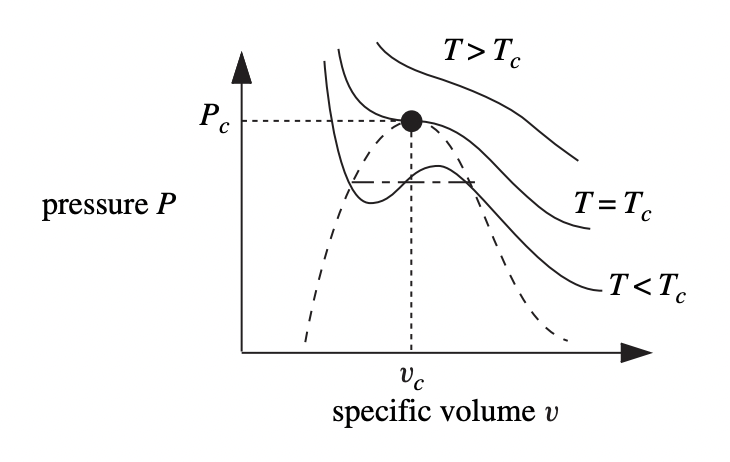
Suppose a system is closed, so \(dN = 0\). Then the first law says \(dE = TdS + J \cdot dq\), and the stability condition says \(\delta T \delta S + \delta J \cdot \delta q \geq 0\). We can always solve for any two variables in terms of the rest. For example, we can write \[ \begin{align*} \delta S &= \frac{\partial S}{\partial T} \bigg |_{q,N} \delta T + \frac{\partial S}{\partial q} \bigg |_{T,N} \delta q, \\ \delta J &= \frac{\partial J}{\partial T} \bigg |_{q,N} \delta T + \frac{\partial J}{\partial q} \bigg |_{T,N} \delta q. \\ \end{align*} \] Substituting these into the stability condition, we can write \[ \begin{align*} 0 &\leq \delta T \bigg(\frac{\partial S}{\partial T} \bigg |_{q,N} \delta T + \frac{\partial S}{\partial q} \bigg |_{T,N} \delta q\bigg) + \bigg(\frac{\partial J}{\partial T} \bigg |_{q,N} \delta T + \frac{\partial J}{\partial q} \bigg |_{T,N} \delta q\bigg) \delta q \\ &\leq \frac{\partial S}{\partial T} \bigg |_{q,N} \delta T^2 + \bigg(\frac{\partial S}{\partial q} \bigg |_{T,N} + \frac{\partial J}{\partial T} \bigg |_{q,N} \bigg) \delta T \delta q + \frac{\partial J}{\partial q} \bigg |_{T,N} \delta q^2 \\ &\leq \frac{\partial S}{\partial T} \bigg |_{q,N} \delta T^2 + \frac{\partial J}{\partial q} \bigg |_{T,N} \delta q^2. \\ \end{align*} \] The last line follows from the fact that \(\frac{\partial S}{\partial q} \big |_{T,N} = -\frac{\partial J}{\partial T} \big |_{q,N}\) via a Maxwell relation. Let’s look at this in two cases, first when along curves of constant \(q\), and then along curves of constant \(T\). In the first case we’d have \(\delta q = 0\), which says \[ \frac{\partial S}{\partial T} \bigg |_{q,N} \delta T^2 \geq 0. \] This says that along curves of constant \(q\), the entropy must be an increasing function of temperature. This evidently implies that the heat capacity along constant \(q\) must be non-negative, since \[ C_q = \frac{\delta Q}{\partial T} \bigg |_{q,N} = T \frac{\partial S}{\partial T} \bigg |_{q,N} \geq 0. \] Let’s now look at curves of constant \(T\), i.e. the isotherms. In that case we’d have \[ \frac{\partial J}{\partial q} \bigg |_{T,N} \delta q^2 \geq 0, \] which evidently implies \(J\) must be an increasing function of \(q\) along the isotherms. In the case of a gas, this condition just says that pressure \(p\) must be a decreasing function of \(V\) along isotherms, which we’ve already seen.
The Third Law
Suppose we take a reversible system and change its state from \(x_1\) to \(x_2\). Then its entropy changes by \[ \Delta S = S_2 - S_1 = \int_{x_1}^{x_2} \frac{\delta Q_{rev}}{T}. \] We can say this for any positive temperature \(T\). Now suppose we allow \(T \rightarrow 0\). What happens to \(\Delta S\)? It turns out experimentally that \(\Delta S \rightarrow 0\). This is an independent fact due to Nernst, which gives us a narrow statement of the third law of thermodynamics.
Third Law (Nernst): The entropy of all systems at zero absolute temperature is a universal constant that can be taken to be zero. That is, between any two states we must have \[ \lim_{T \rightarrow 0} \Delta S = 0. \] This statement turns out to be experimentally equivalent to an even stronger statement. Not only does \(\Delta S \rightarrow 0\), but in fact \(S \rightarrow 0\) for any substance.
Third Law (General): The entropy of all substances at zero absolute temperature is the same universal constant, which can be defined to be zero. That is, for any system, \[ \lim_{T \rightarrow 0} S = S_0 \equiv 0. \] This extended version of the third law can be experimentally tested by looking at the behavior of certain materials like sulfur or phosphine, which can exist near absolute zero in multiple crystalline structures called allotropes. Each allotrope has its own heat capacity \(C(T)\). It’s been shown that as \(T \rightarrow 0\), each of these paths sends \(C \rightarrow 0\), which implies \(S \rightarrow 0\) as well.
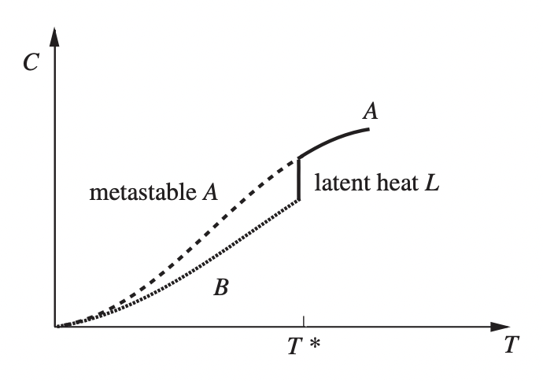
Here are a few notable consequences that follow from the third law. First, since \(S \rightarrow 0\) as \(T \rightarrow 0\), it must also be true that any partial derivative of \(S\) must go to zero as well, \[ \lim_{T \rightarrow 0} \frac{\partial S}{\partial X} \bigg |_T = 0. \] The heat capacities must go to zero as well since \[ \Delta S = \int_0^T \frac{C(T')}{T'} dT' \rightarrow 0. \] This integral would diverge as \(T \rightarrow 0\) unless \(C \rightarrow 0\) as well.
The thermal expansion coefficients must also go to zero since by a Maxwell relation we have \[ \alpha \equiv \frac{1}{q} \frac{\partial q}{\partial T} \bigg |_J = \frac{1}{q} \frac{\partial S}{\partial J} \bigg |_T \rightarrow 0. \] The last consequence of note is that it must be impossible to cool any system to absolute zero in a finite number of steps, which for practical purposes means it’s impossible to cool a system to zero exactly. For example, suppose we tried to cool a gas by adiabatically reducing its pressure. Since all \(S(T)\) curves must intersect at \(0\), any successive step would involve progressively smaller changes in \(S\) and \(T\) as \(T \rightarrow 0\).
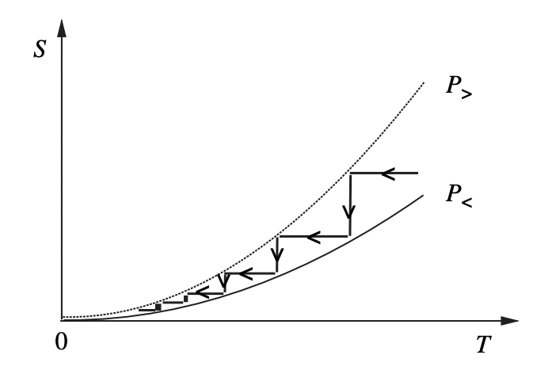
It’s worth mentioning that in a certain sense the third law is less reliable than the other laws of thermodynamics since at its root its validity rests entirely on quantum mechanics, and the quantum mechanical behavior of different systems can vary wildly near absolute zero. This contrasts with the other laws, which at a microscopic level only depend on things like the conservation of energy, or the emergent effect of a large number of degrees of freedom. We’ll see a microscopic derivation of each of these laws in future chapters.